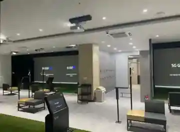
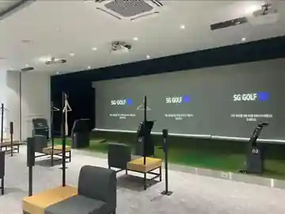

한국프로골프협회 투어프로로 표기 · 중고연맹 출신
HYRAM GOLF · LESSON PROFESSIONAL
박형규 투어프로
목적 있는 연습, 더 자신 있는 플레이.
현장 소개판 기재: KPGA TOUR PRO · 1부투어 시드 및 2부투어 활동 · 동서대학교 평생교육원 강사
경기의 흐름을 이해하는 관점으로 현재 스윙을 점검하고, 구력·목표에 맞춘 1:1 레슨 상담을 제공합니다. 작은 변화도 연습장에서 확인할 수 있도록 점검 방향을 함께 정리합니다.
약력은 제공받은 현장 프로필 안내판 기준입니다. KPGA 공식 등록번호 및 투어 선발전 순위는 별도 검증 중입니다.박형규 프로 주요 약력
소속 프로 소개판에 기재된 투어·교육·아카데미 활동 이력을 정리했습니다.
선수 활동 이력은 현장 안내판 기재 기준
아카데미 및 교육 활동
현장 소개판에 프로 소속으로 기재
차세대 선수 지망생 지도 활동
안내판에 이전 소속으로 기재
※ 위 약력은 제공받은 현장 프로필 안내판의 기재 내용을 바탕으로 정리했습니다. KPGA 공식 등록번호, 선발전 등수, 상세 재직기간은 별도 공인 자료 대조 전입니다.
박형규 프로 월 레슨
월 레슨비300,000원
주 2~3회 · 회당 60분
내 목표에 맞춘 꾸준한 연습
입문 기본기부터 스윙 점검, 구질·스코어 개선까지 현재 구력과 목표를 상담하고 레슨 방향을 정합니다.
시작일, 해당 월의 총 횟수·5주차 일정, 연습장 이용료 포함 여부 및 예약 변경 조건은 결제 전에 안내하고 확정합니다.
월 레슨 상담 신청 ↗레슨 취소·환불 안내 →ABOUT THE LESSON좋은 레슨은
좋은 레슨은
지금의 스윙에서 시작됩니다.
레슨 상담은 개별 목표에 맞춰 진행 방향을 정하는 것을 우선합니다. 스윙의 현재 상태와 교정 목표를 함께 살피고, 이해하기 쉬운 연습 방법을 제안하는 과정을 지향합니다.
※ 아래 과정은 HYRAM의 상담 구성 예시이며, 실제 레슨 방식·측정 장비 사용·시설 이용료·운영 일정은 박형규 프로와 상담 후 확정됩니다.
- 01 · CONSULT구력·고민·희망 목표 확인
- 02 · CHECK스윙과 구질의 주요 개선 포인트 점검
- 03 · PRACTICE연습 우선순위와 재점검 방향 상담
PRACTICE VENUE · MYEONGJI
리셉션 · SDR ACADEMY 실내 공간 · 상담 및 대기 SG GOLF 스크린 타석
레슨 장소 안내
SDR ACADEMY
SG GOLF Field 명지스크린USER-PROVIDED VENUE INFORMATION
SG GOLF Field 명지스크린USER-PROVIDED VENUE INFORMATION
플러스시네마 6층 610호
부산광역시 강서구 명지국제8로10번길 38실내 스크린 골프 연습 공간을 활용한 레슨 상담 장소로 안내받았습니다. 방문 전 실제 레슨 가능 일정과 입점 위치를 확인해 주세요.
네이버지도에서 주소 검색 ↗

시설 사진은 제공받은 촬영 자료입니다. 레슨 시간·장소 실제 이용 가능 여부는 사전 상담 시 확인해 주세요.
변화의 시작은
한 번의 상담에서.
월 300,000원 · 주 2~3회 · 회당 60분. 희망 일정과 레슨 목표를 알려주세요. 골프 피팅 및 클럽 상담도 HYRAM GOLF에서 함께 요청할 수 있습니다.
레슨 일정 문의하기 ↗← HYRAM 홈페이지